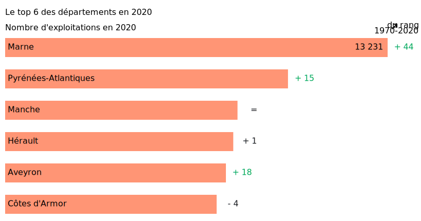

Retourner à l’accueil 
Partager la Viz (Mail) 
Partager la Viz (X)
Partager la Viz (Facebook)
Explorer les données territoriales 
Pendant la navigation, appuyer pour accéder aux autres actions 
Evolution du nombre d’exploitations agricoles en france
En 2020, la France
?
Y compris les 5 départements d’outre-mer : Guadeloupe, Martinique, Guyane, la Réunion et Mayotte (Mayotte est recensée depuis 2020).
compte 416 436 "exploitations agricoles"
?
Unité de production agricole disposant d’une gestion courante propre et dépassant un seuil minimum de superficie - 1 ha ou 20 ares de cultures spécialisées - ou de production, estimée en cheptel ou volume.
selon les résultats du dernier recensement agricole
En métropole, elles sont 390 000. C’est 100 000 de moins en 10 ans, soit une baisse de 20%
Pour autant, l’agriculture est toujours présente dans nos paysages : la superficie agricole utilisée ne recule que de 1 % depuis 2010.
Pour autant, l’agriculture est toujours présente dans nos paysages : la superficie agricole utilisée
?
La superficie agricole utilisée (SAU) comprends les terres arables (y compris pâturages temporaires, jachères, cultures sous abri, jardins familiaux...), les surfaces toujours en herbe et les cultures permanentes (vignes, vergers...).
ne recule que de 1 % depuis 2010.
Les exploitations se regroupent, elles sont moins nombreuses tout en travaillant un espace équivalent. Ainsi, le poids des exploitations de moins de 20 ha baisse de 43 % à 38 %.
De moins en moins d’exploitations : cette tendance observée au travers des recensements agricoles se poursuit : elles étaient 4 fois plus nombreuses en métropole en 1970.
Si la baisse du nombre d’exploitations est une constante depuis 50 ans, elle a été maximale entre 1988 et 2000, avec une chute de 350 000 en douze ans.
Si la baisse du nombre d’exploitations est une constante depuis 50 ans, elle a été maximale entre 1988 et 2000,
?
La mise en oeuvre des "quotas laitiers" et des mesures d'incitation à la retraite ont favorisé les regroupements.
avec une chute de 350 000 en douze ans.
Evolution annuelle moyenne du nombre d’exploitations

ℹ️ Télécharger les données
📥 Format CSV 📥 Format SVG 📥 Format PNG
Depuis, la baisse s’atténue progressivement. Elle s’établit à -2.3 % par an sur la période 2010-2020 (contre -3 % entre 2000 et 2010)
Dans presque toutes les spécialisation, le nombre d’exploitations recule entre 2010 et 2020, excepté pour “Horticulture-maraichage”.
C’est dans les exploitations spécialisées en élevage que la baisse est la plus forte : -30 % (correspondant à -63 500 exploitations), preque les 2/3 de la diminution totale.
L’élevage de bovins est particulièrement concerné : -33 000 exploitations, soit -27 %. Il perd le premier range qu’il détenait en 2010, qui revient à la spécialisation “Grandes cultures”.
Le top 6 des départements en 2020

ℹ️ Télécharger les données
📥 Format CSV 📥 Format SVG 📥 Format PNG
Il y a 50 ans, c’est la Bretagne et ses proches voisins qui marquaient la tête du classement.
En 2020, la distribution géographique des exploitations est assez proche, bien qu’un peu plus homogène, avec en particulier l’apparition de la Marne, des Pyrénées-Atlantiques et de l’Aveyron parmi les 6 premiers départements.
Pour en savoir plus sur le sujet :
🮠Site Agreste ğŸ®
Pour aller voir d’autres DataViz :
📉 Accueil VizAgreste 📉
{kind=link}
{kind=link}
{kind=link}
{kind=link}
{kind=link}
{kind=link}
{kind=link}
{kind=link}
{kind=link}
{kind=link}
{kind=link}
{kind=link}
{kind=link}
{kind=link}
{kind=link}
{kind=link}
Comment se traduisent ces évolution générales dans les territoires ?
Dans une grande façade Ouest, le nombre d’exploitations en Normandie, Bretagne, Pays de la Loire, et Nouvelle-Aquitaine par exemple, se réduit plus fortement …
…que dans les Hauts-de-France, l’Ãle-de-France ou l’ancienne Champagne-Ardenne.
Tous les territoires sont concernés par la baisse du nombre d’exploitations excepté la Corse et la Guyane, qui se distinguent par une légère augmentation.
À l’opposé, le nombre d’exploitations baisse le plus fortement dans trois départements de l’Est de la France métropolitaine : Vosges, Territoire-de-Belfort et Alpes-Maritimes.
Dans ces départements se poursuit ces dix dernières années une tendance plus ancienne, avec une diminution plus prononcée qu’en moyenne.
Les Vosges comptent 1 000 exploitations de moins qu’en 2010, évolution plus forte que celle observée entre 2000 et 2010 (-4 % par an contre -3,2 %).
Vosges : un tiers d’exploitations en moins entre 2010 et 2020
ℹ️ Télécharger les données
📥 Format CSV 📥 Format SVG 📥 Format PNG
Comparaison : indice base 100
ℹ️ Télécharger les données
📥 Format CSV 📥 Format SVG 📥 Format PNG
Les Alpes-Maritimes détonnent au sein de la région Sud. Beaucoup de petites exploitations de fruits, gérées par des exploitants retraités ou proches de la retraite en 2010, ont disparu.
Alpes-Maritimes : dix fois moins d’exploitations en 50 ans
ℹ️ Télécharger les données
📥 Format CSV 📥 Format SVG 📥 Format PNG
Comparaison : indice base 100
ℹ️ Télécharger les données
📥 Format CSV 📥 Format SVG 📥 Format PNG
En Guyane, l’augmentation est continue depuis plusieurs recensements. Il s’agit là d’un cas isolé au sein des départements d’outre-mer, où la tendance est plutôt à la stabilisation du nombre d’exploitations.
En Guyane, l'augmentation ? L’immigration (notamment celle des réfugiés politiques Hmong venant du Laos) a contribué à développer l’activité agricole en Guyane. est continue depuis plusieurs recensements. ? Les recensements agricoles couvrent au même moment les Dom et la métropole à partir de 1988. Dans les Dom, une opération de recensement a eu lieu en 1981. Il s’agit là d’un cas isolé au sein des départements d’outre-mer, où la tendance est plutôt à la stabilisation du nombre d'exploitations.
Guyane : progression continue
ℹ️ Télécharger les données
📥 Format CSV 📥 Format SVG 📥 Format PNG
Antilles et la Réunion : vers une stabilisation après une forte réduction
ℹ️ Télécharger les données
📥 Format CSV 📥 Format SVG 📥 Format PNG
En Corse le nombre d’exploitations se redresse légèrement
Corse : légère augmentation entre 2010 et 2020
ℹ️ Télécharger les données
📥 Format CSV 📥 Format SVG 📥 Format PNG
Comparaison : indice base 100
ℹ️ Télécharger les données
📥 Format CSV 📥 Format SVG 📥 Format PNG
Le profil du département de la Marne est atypique : le nombre d’exploitations est quasi stable depuis 50 ans
Marne : seulement 20 % d’exploitations en moins en 50 ans
ℹ️ Télécharger les données
📥 Format CSV 📥 Format SVG 📥 Format PNG
Comparaison : indice base 100
ℹ️ Télécharger les données
📥 Format CSV 📥 Format SVG 📥 Format PNG
Dans cette terre de champagne, on compte en 2020 9 300 exploitations viticoles, soit 70 % de l’ensemble. Elles occupent pour la plupart moins de 20 ha. C’était déjà le cas en 1970.
Cette stabilité explique que la Marne soit devenue en 2020 le 1er département de France en nombre d’exploitations, alors qu’il n’était que le 45e il y a 50 ans !
Taux d’évolution du nombre d’exploitations, 2010-2020 (en %)